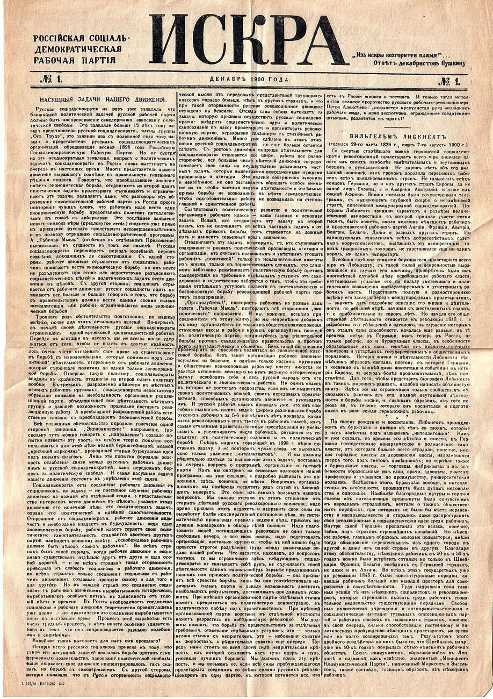
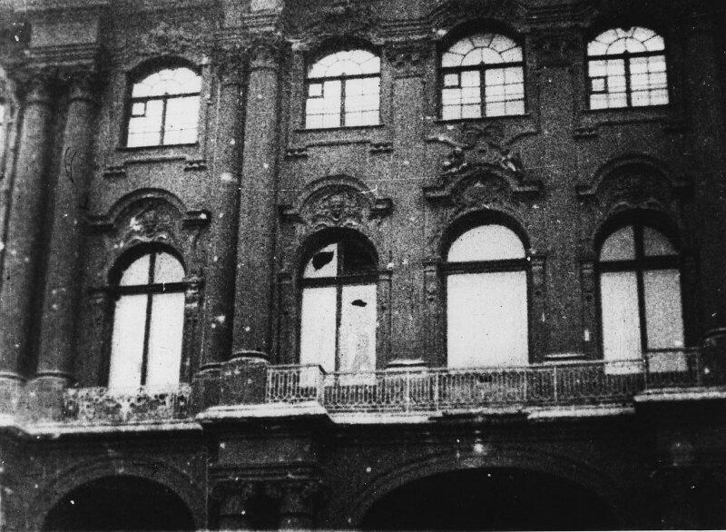
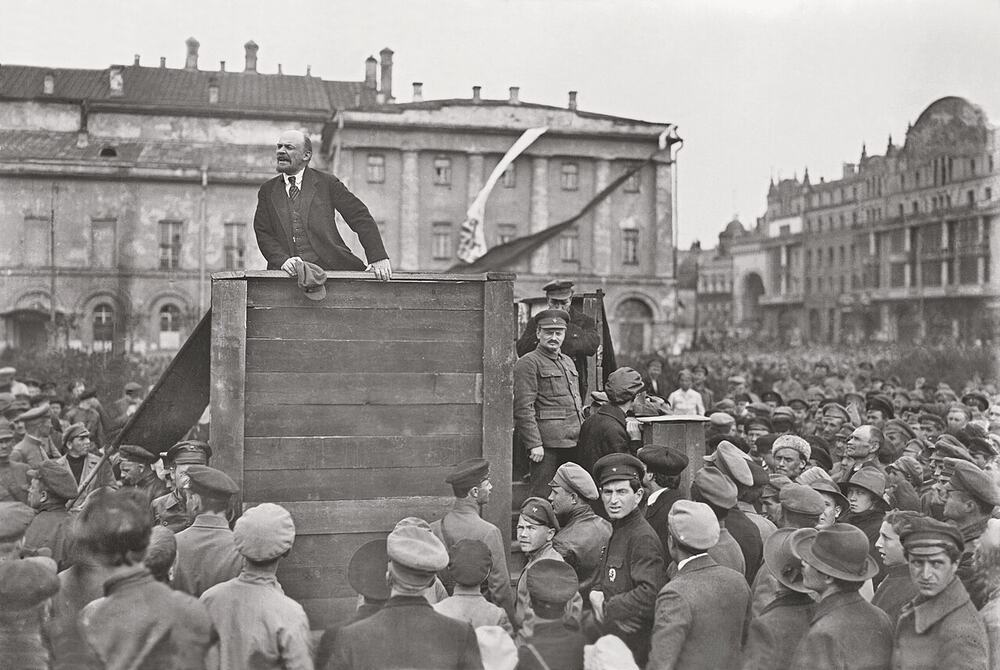

FILE 06 // EST. 1902 // SEAT: PETROGRAD, VIA ZURICH // STATUS: THE HINGE OF THE CENTURY
LENINISM
The vanguard party: revolution as a profession, organization as a weapon,
and the first successful seizure of a state in Marxism's name. Every file after this one
is a response to it.
Vladimir Ulyanov's biography supplied the doctrine's temperature: his elder brother Alexander was
hanged in 1887 for plotting against the Tsar, and the seventeen-year-old who became Lenin
concluded — against the martyr's own method — that heroism without organization is suicide. Siberian
exile, then Zurich, Munich, London: twenty years of émigré newspapers, factional arithmetic, and a
single fixed idea about what a party is for.
Tsarist Russia broke every orthodox assumption: no parliament worth entering, a small proletariat,
a police state that ate open parties alive. What Is To Be Done? (1902) drew the conclusion the
Second International never forgave: left to itself, the working class reaches only trade-union
consciousness — the wage fight, not the system fight. Revolutionary consciousness must be carried
into the class by a vanguard of professional revolutionaries, organized like a combat staff,
conspiratorial by necessity, unified by democratic centralism: full debate inside, one line
outside. At the 1903 congress the Russian party split over precisely this — see
Schism №3 — and the Bolshevik faction was born.
02 Core Doctrine
The vanguard party
A minority of disciplined professionals as the class's general staff. Not a debating society,
not a counter-culture: an instrument, built to survive police states and seize moments. The single
most copied — and most abused — organizational design of the twentieth century.
Democratic centralism
Freedom of discussion, unity of action: debate until the vote, then every member executes the
line. In Lenin's hands, a combat necessity; in his successors', a ratchet — the discussion phase
proved easier to close than reopen.
Imperialism
Imperialism, the Highest Stage of Capitalism (1916): monopoly capital exports itself,
carves the world, and buys off its home workers with colonial profits. Consequence: the chain
breaks at its weakest link — revolution comes first not to the richest countries but to the
Russias. Marxism's center of gravity moves east, permanently.
State and revolution
The 1917 pamphlet: the bourgeois state cannot be inherited, it must be smashed and replaced
by a soviet state — armed workers, recallable delegates, no standing bureaucracy — which then
withers. Written weeks before taking power; the withering clause remains, as the archive notes
elsewhere, unimplemented.
The worker-peasant alliance
Against orthodox sequence-keeping: the peasantry is not a reactionary mass to await but a
revolutionary partner to lead. "Land, Peace, Bread" won the countryside in 1917 — a template
Mao would later invert into peasant primacy.
"Give us an organization of revolutionaries, and we will overturn Russia!"
— LENIN, WHAT IS TO BE DONE? (1902)
03 Key Figures
V. I. LENIN 1870–1924 // the instrument-maker
LEON TROTSKY 1879–1940 // October's organizer — see FILE 09
GEORGI PLEKHANOV 1856–1918 // the teacher who voted against the lesson
04 In Practice
1917 vindicated the design twice. In February the Tsar fell without the Bolsheviks; by April Lenin
was back (via the famous German sealed train) demanding "All Power to the Soviets"; by October the
party of professionals took the Winter Palace in a night, with fewer casualties than the film versions.
Then came the practice the theory had deferred: civil war against Whites and fourteen intervening
armies, the Cheka's Red Terror, War Communism's requisitions, famine — and the instrument hardened
into the state. By 1921 the factions inside the party were banned, the Kronstadt sailors were dead
(see FILE 08), and the NEP had readmitted the market Lenin had
abolished, "seriously and for a long time."
Lenin's last writings are the file's most contested pages: sidelined by strokes, he dictated a
"Testament" warning that Stalin had concentrated "boundless power" and should be removed as General
Secretary. The warning was read to a closed session and shelved. He died in January 1924; the city of
Petrograd was renamed within the week, and the embalmed body — against his widow's wishes — became
the founding relic of a cult he would have recognized from church.
05 Schisms & Enemies
vs. the Mensheviks (1903–1917). Broad party or combat party — the membership-clause split
that became two parties, then a firing squad's distinction.
vs. Kautsky (1918). The "renegade" exchange: democracy as bourgeois shell versus dictatorship
as socialism's negation. Schism №5.
vs. the communist left (1918–1921). Brest-Litovsk, parliaments, unions, Kronstadt: Lenin
against those to his left, in the polemic that named FILE 08.
the succession (1923–). Leninism without Lenin split three ways at once — see
FILE 09 and FILE 10, both of which
claim this file as ancestor and the other as forgery.
06 Timeline
1887Alexander Ulyanov hanged; his brother chooses organization over martyrdom.
1902What Is To Be Done? — the vanguard doctrine.
1903Second Congress: Bolshevik/Menshevik split over one clause.
1912Prague conference: Bolsheviks become a separate party outright.
1916Imperialism — the weakest-link theory.
1917April Theses; October: the Winter Palace falls to the party of professionals.
1918Brest-Litovsk peace; civil war and Red Terror begin.
1921Kronstadt crushed; factions banned; NEP launched — all in one March.
1922USSR founded; Lenin's first stroke; the Testament dictated that winter.
1924Lenin dies. The fight over this file begins immediately and has not ended.
07 Legacy
Leninism is the archive's hinge: before it, communism was a doctrine; after it, a state — and then
dozens. The vanguard model won revolutions in Russia, China, Vietnam, Cuba, and lost its soul, its
critics answer, at exactly the moment of victory: an instrument for seizing power proved structurally
incapable of surrendering any. Whether Stalin was Leninism's betrayal or its completion is the single
longest-running argument in this building, conducted daily between FILES 08, 09 and 10.
08 Plates
The apparatus and the moment. A newspaper first, because the paper was the scaffolding the party was built on, and then the two days everything turned.

Dec 1900 // Iskra — "from a spark, a flame"; the paper Lenin argued builds the party

26 Oct 1917 // the morning after the Winter Palace

1920 // after the speech — the crowd the theory was addressed to
Plates are vendored from Wikimedia Commons under their own licences and re-encoded to web size; the credit for each is listed in the Plate Room.